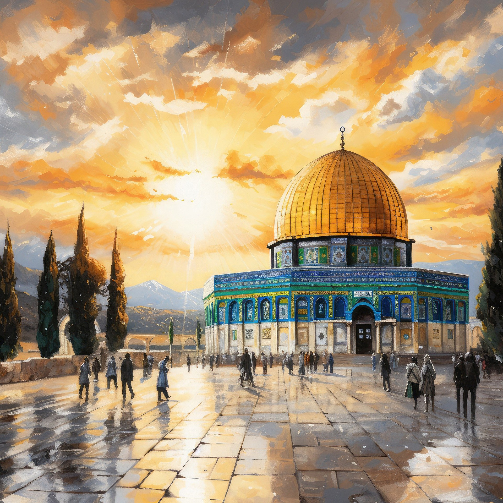
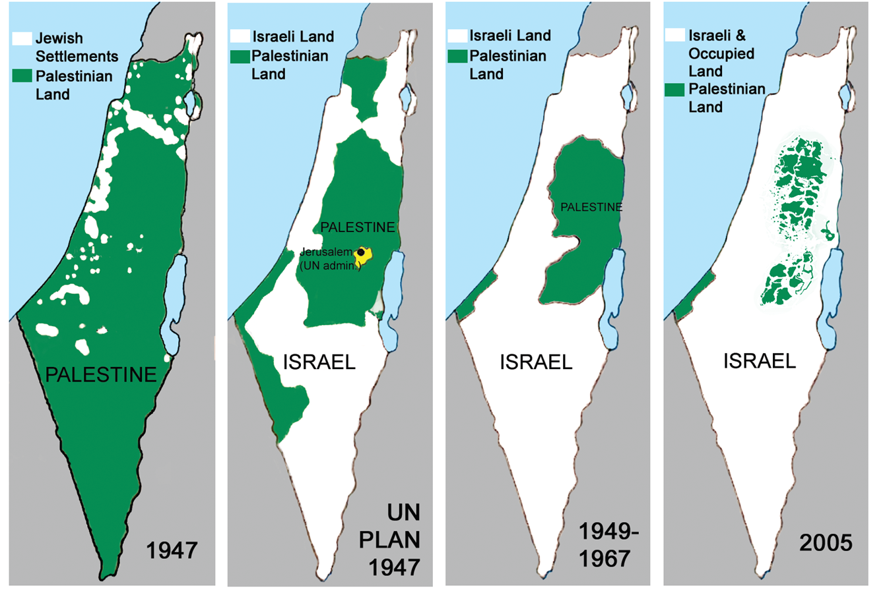
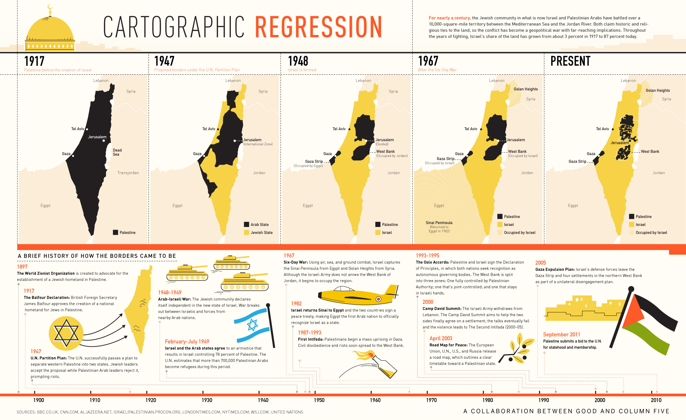
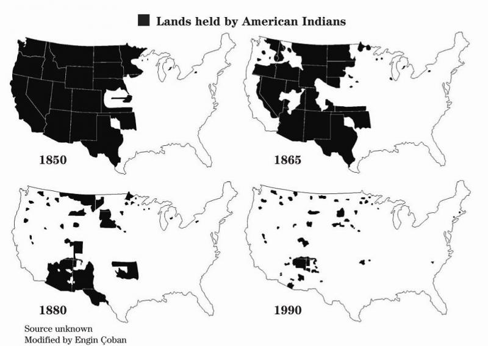

From 632 CE power shifted to the Islamic Caliphates. The first was the Rashidun Caliphate and in 634 CE it conquered Palestine. In 661 CE Muawiyah was crowned Caliph of the Islamic World in Jerusalem. The Rashidun Caliphate (632-661 CE) grew to become the largest empire of the time.

About Palestine
Capital of Palestine

Loss of Land

Cartrographic Regression

Lands held by American Indians
We know too well that our freedom is incomplete without the freedom of the Palestinians.
-Nelson Mandela
About Palestine
To get more updates and information about Palestine please sign up.